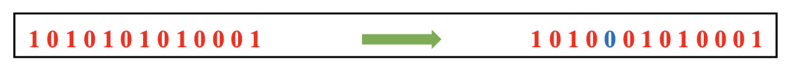
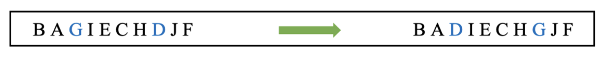

Mutation Operators
Mutation operators introduce variation into the population by modifying one or more genes of an individual. In cellular genetic algorithms (CGAs), mutation is a key mechanism that ensures diversity and enables exploration of the solution space, preventing premature convergence.
Understanding Mutation
Mutation in genetic algorithms mimics the natural process of genetic mutation, where random changes occur in an individual’s genome. These changes help the algorithm discover new solutions and improve its overall performance.
The Role of Mutation in CGA
Diversity Preservation: Mutation ensures that the population does not converge prematurely to suboptimal solutions.
Exploration: Introduces new solutions to explore unexplored regions of the solution space.
Fine-Tuning: Makes small adjustments to solutions, aiding in reaching optimal solutions.
Mutation Examples
Below is an example of a Bit-Flip Mutation applied to a binary chromosome:
{kind=link}
Figure 1: Bit-flip mutation flips a single gene in a binary chromosome.
Another example is the Swap Mutation, often used for permutation-based problems. It swaps two genes, introducing a small but significant change in the chromosome:
{kind=link}
Figure 2: Swap mutation changes the order of two genes in a chromosome.
Common Mutation Types
Bit-Flip Mutation: Flips a bit in binary-encoded chromosomes.
Swap Mutation: Exchanges two genes in permutation-based chromosomes.
Byte Mutation: Applies byte-level changes to real-valued genes.
Two-Opt Mutation: Reverses a segment of the chromosome, particularly useful in path optimization.
API References
The following sections provide detailed documentation for the mutation operators available in the pycellga.mutation package.
Bit Flip Mutation
Applies a bitwise flip to binary-encoded chromosomes. This operator is a classic choice for binary genetic algorithms, offering a simple yet effective mutation approach.
Byte Mutation
Performs mutations at the byte level for real-valued chromosomes. This operator leverages byte manipulation to create small, precise adjustments in the solution space, optimizing the algorithm’s performance for continuous functions.
Randomized Byte Mutation
Introduces randomness at the byte level, enabling broader exploration in real-valued optimization tasks. This operator is particularly effective when a high degree of variation is desirable.
Uniform Float Mutation
Applies uniform random mutations across real-valued chromosomes. This operator is suitable for continuous optimization, where each gene is adjusted within a defined range to enhance solution diversity.
Insertion-Based Mutation
A mutation strategy tailored for permutation-based representations, such as in sequencing and scheduling problems. This operator repositions a randomly selected gene within the chromosome, altering the order while preserving elements.
Shuffle Mutation
Randomly rearranges a subset of genes in the chromosome. This operator is effective in permutation-based problems, promoting diversity by shuffling segments without altering individual gene values.
Swap Mutation
Swaps the positions of two genes, introducing subtle changes ideal for permutation-based optimizations. This operator is commonly applied in combinatorial problems where order is significant.
Two-Opt Mutation
A mutation operator frequently used in path optimization problems, such as the Traveling Salesman Problem. It reverses a segment of the chromosome, allowing for new path configurations without altering the gene order.